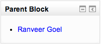

A Mentees block is a frontpage block that provides mentors with quick access to their mentee(s) profile page(s). A mentor might be a parent for example who has access to their child’s information through the link in the block.
The mentees block may be added to the site front page or to My home.
To the site front page:
- On the site front page click “Turn editing on”
- Choose Mentees from the Add a block drop-down menu
- If required, give the Mentees block a title by following the block configuration/edit link
To My Moodle:
- Access Administration > Site administration > Appearance > Default My Moodle page
- Choose Mentees from the Add a block drop-down menu
- If required, give the Mentees block a title by following the block configuration/edit link
The mentees block does not become visible until individual “mentors” have been assigned a role that enables them to mentor other users who become their “mentees” (e.g., a parent mentoring a child, or a tutor mentoring a student). To assign a mentor to a mentee, the mentor must first be assigned a role that allows that mentor permission to view relevant user information (moodle/user:viewdetails set to allow). After having been assigned a role that grants viewing permission, the mentor’s role must then be assigned to the mentee/user whose information they wish to view.
Mentor users logging on to the site will then be presented with a mentees block containing names and links to information about the individual users the mentor has been granted authorization to view.